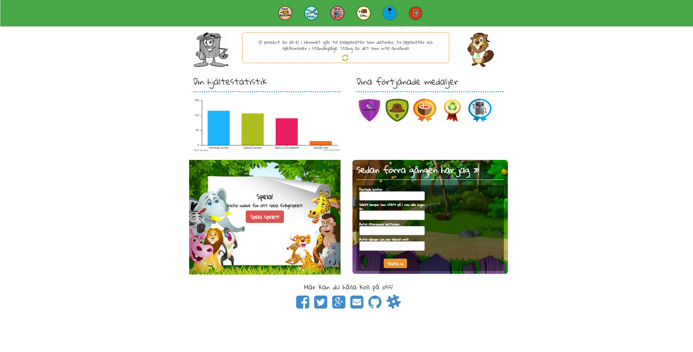

Övning 1 - Hemuppgift
Kramprojektet - En miljömedvetenhets site för barn

Frågorna jag ställde var:
-
Vad var din första känsla när du kom in på siten?
-
Vad tror du målgruppen är?
-
Förstår du hur siten fungerar?
De som testade sidan var:
- Jessica Björk - Vän
- Erik Nilsson - Sambo
Jessica:
-
Hade först problem med att logga in och skapa lösenord. Registreringsformuläret fungerade inte. Sidan var barnvänlig men rörig, för mycket intryck.
Mycket att trycka på och utforska vilket är roligt. Bra info att jag kan välja att spela spelen och svara på frågorna.
-
Barn i ålder 7-10 år.
-
Ja men det fanns saker som kunde ha varit tydligare. Exempelvis tydligare att man kan klicka på recycle knappen för mer bra tips. Där man fyller i
hur mkt man har sparat på miljön försvinner lite bland de övriga. Förstod först inte att det var så jag fick min hjältestatistik.
Erik:
-
Den kändes färglad och snyggt designad. Jag tyckte att det var lite svårt att veta var jag skulle börja. Sidan fungerade ganska bra på min mobiltelefon
men vissa grejor såg lite konstiga ut.
-
8-11 år
-
Ja, fast det var lite svårt att förstå varifrån "Hjältestatistiken" och medaljerna skulle komma. Det upptäckte jag först när jag fyllde i formuläret om vad
jag gjort sedan "förra gången". Jag tycker det hade varit bra om alla aktiviteter på sidan kunde göra så att man fick medaljer och kunde påverka statistiken.
Slutsats
Jag tyckte frågorna kändes bra utifrån de svar som jag fick. Fråga 1 och 3 var ganska öppna vilket gjorde att jag hade kunnat få in ännu mer användarinfo om jag
hade velat. Fråga 2 var kanske i kortaste laget, men jag tyckte ändå att det var intressant att veta om deras bild av målgruppen matchade det som vi hade tänkt,
vilket stämde hyfsat bra.
För att få ett mer korrekt svar så kanske användarna skulle ha varit just barn som websidan var riktad till. Då hade jag velat fråga barn både i det övre och det
undre spannet för att se om sidan är lämpad för båda. Erik, min sambo är utvecklare och har sett sidan innan. Det kan påverka svaren på frågorna.
Slutsatsen känner jag är att det är bra med användartest, men att man då bör ha en tydlig bild av vem som är målgruppen och göra tester på främst dessa användare.
Frågorna är också viktiga då man inte vill ställa ledande frågor som gör något form av antagande. Jag önskar att vi hade ställt de här frågorna när vi gjorde projektet
då vi insåg att det kunde finnas en del oklarheter, vilket svaren antyder att det faktiskt gjorde.